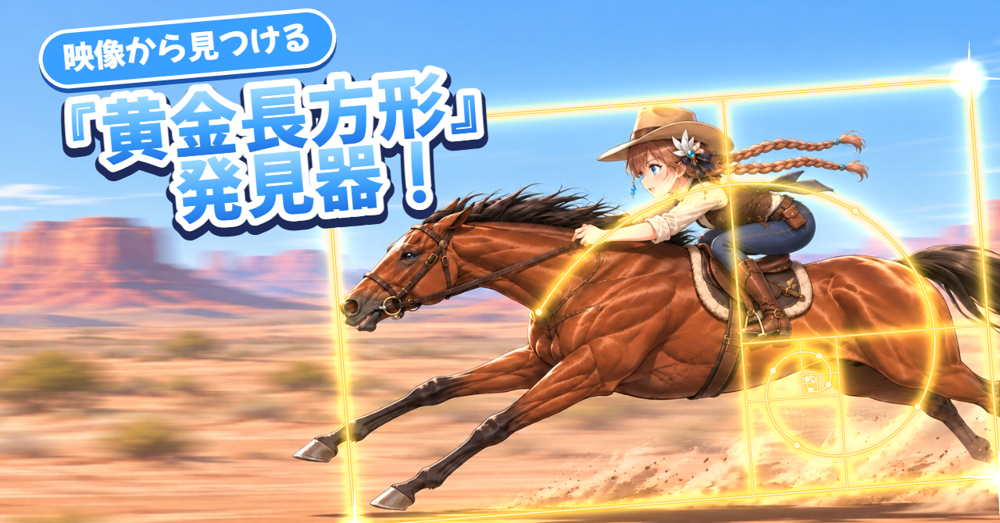

映像から見つける『黄金長方形』発見器！
はじめに
「黄金長方形」を感じることで、「黄金の回転」と呼ばれる特別な回転を生み出すことでもの凄いパワーを得られるというのは、一部の人々には常識かもしれません。
今回は実写の映像の中から黄金長方形を自動で見つける「黄金長方形発見器」を作りました。


処理した動画から6コマ。左上から、雄のヘラジカ、コミミズク、カナダヅル、カナダガンの親子、フロリダパンサーの親子（自動撮影カメラ）、シナモンコガモのつがい。右上のコミミズクや中段左のカナダヅルは、体の傾きに合わせて長方形も傾いています。映像は米国魚類野生生物局が公開しているパブリックドメインの映像です（出典は記事の最後）。
黄金比と黄金長方形
黄金長方形
黄金長方形の作り方についてです。黄金長方形の中に正方形をひとつ作ると、残った小さい長方形もまた黄金長方形になります。その残りにまた正方形を作り、さらにまた作る……と繰り返し、作った正方形の中心点を連続で結んでいくと、無限に続く「うず巻き」が描かれます。このうず巻きを、作中では「黄金の回転」と呼んでいます。


黄金比とは
黄金比は、短い辺と長い辺の比が 1 : 1.618…（φ、ファイ）になる比率です。この比の長方形が黄金長方形で、上の図のとおり、正方形を切り取った残りがまた同じ比になります。黄金比は、ヒマワリの種の並び方やオウムガイの殻、パルテノン神殿や名画などと結びつけて、美しい比率として語られてきました。

黄金比の解説でよく見る「名画に黄金螺旋を重ねる」図を、葛飾北斎『神奈川沖浪裏』で作ってみたもの。（画像はパブリックドメイン。出典は記事の最後）。
黄金比が誰にとっても美しいかについては異論もあります（たとえば Höge, 1997 は、黄金比の好みを調べた古典的な実験を再現して、黄金比が最も好まれるという結果は得られなかったと報告しています）。しかし、世の中のさまざまな場所に黄金比が採用されていることを考えると、私たちが黄金比に何か惹かれてしまうのは、現代科学でも解明されていない美しい謎の一つなのかもしれません。
「矩形検出」とは違う「観察」による発見
画像から四角形を見つける処理は、昔からあります。画像の中にある直線や四角形の輪郭から、窓や紙、看板のような四角い物を探す「矩形検出」です。今回やりたいのは、それとはちょっと違います。
今回やりたいのは、荒木飛呂彦著『スティール・ボール・ラン』でもやっているような、自然のものや芸術品から黄金長方形の構造を観察して見つけることです。動物の体は四角くありませんが、形や向きを観察して、そこに黄金長方形を見いだしたいのです。

見いだす黄金長方形は、動物の輪郭にぴったり合っている必要はありません。物体の内側とかじゃなくて、ちょっとはみ出してもいい。多少の余白やずれがあっても、芸術的なひらめきで黄金長方形を感じられるなら、それでよいと考えています。とにかく検出したんだから、これは黄金長方形でOK、という考え方です。
黄金長方形を見つける仕組み
黄金長方形発見器は映像の1コマごとに、次の3段階で黄金長方形を探します。

① 物体検出
最初に、物体検出のモデル YOLOE で、映像に写っている物の形をピクセル単位で切り抜きます（切り抜いた形をマスクと呼びます）。使っているのは、YOLO26 をもとにした YOLOE-26 の中くらいの大きさのモデル（yoloe-26m-seg、論文）で、探す物の種類を言葉で指定できます。今は「鳥」「猫」「鹿」「花」「魚」「絵画」「彫刻」など49種類を指定しています。


上が入力のコマ、下が YOLOE で切り抜いた輪郭（白い線）。2羽のカモを別々の物として切り抜けています。
黄金長方形をかぶせるのは、この切り抜いた物だけです。画面の何もない場所には、そもそも長方形を当てはめにいきません。なお、物全体のほかに、頭側や尾側のような物の「部分」も候補として切り出しています。
② 黄金長方形の当てはめ
次に、切り抜いた形に黄金長方形をかぶせます。長方形の縦横比は黄金比に固定し、物を丸ごと囲む大きさにします。物の縦か横のどちらかはぴったり収まり、もう一方には余白が出ます。
難しいのは長方形の向きです。向きによって、物を丸ごと囲むのに必要な長方形の大きさが変わります。そこで、向きを0度から170度まで10度刻みで18通り試し、それぞれの向きで物がちょうど収まる黄金長方形を作って、いちばん小さいものを選びます（マスクの点を長方形の長辺と短辺の方向に投影して、はみ出した0.5%の点を除いた幅に合わせています）。

体を傾けて止まっているキガシラムクドリモドキ。長方形も体の向きに沿って傾き、頭から尾まで丸ごと囲んでいます。
ただし、面積だけで選ぶと問題があります。細い棒で考えてみます。

長さ1の棒を囲む黄金長方形。棒を長方形の対角線に沿わせると、面積が28%小さくなる。
棒は、長方形を約32度傾けて対角線に沿わせたほうが、囲む面積が28%小さくなります。面積だけで選ぶと、物の向きと関係なく長方形が傾いてしまいます。しかも、棒の長さに合わせて黄金長方形を作れば、どんな棒でも角度を調整して黄金長方形をかぶせられそうです。
そこで、長方形の向きには「納得感」を求めることにしました。
- 水平または垂直だと「納得感」がある
- 主成分分析して、いちばん広がっている向きを「納得感」がある向きとする
なお、長方形の回転は画像の平面の中だけで、奥行き方向の傾き（斜めから見た形のゆがみ）は扱っていません。
③ しっかりした黄金長方形を見つける
最後に、かぶせた長方形に点数をつけます。点数は次の6項目をそれぞれ0〜1で計算し、重みをかけて平均したものです。

この平均に、YOLOE が「これは鳥だ」と答えたときの自信の度合いに応じたおまけ（最大 +0.3。部分は8割）を足し、長方形が画面からはみ出している分だけ減らします（画面の中にある割合の2乗を掛けます）。0.5点に届かない長方形は表示しません。
「目立ち度」の元になる顕著性マップは、人の目が引きつけられやすい場所を0〜1の数値で表した地図です。次の4つの古典的な手法で地図を作り、重みをかけて合わせています。

上段左から、入力、ピント、周波数（スペクトル残差）。下段左から、細かい明暗、色の違い、4つを合わせた顕著性マップ。明るいほど目立つ場所。この場面では手前の草も明るく出ていて、カモの目立ち度は0.44と0.65でした。

4つを合わせたあと、画面の中央を少しだけ優先します（主役は中央にあることが多いため）。
実際の点数の例です。上のシナモンコガモの画像では、2羽とも表示されました。

物全体と、その「部分」の長方形は重なります。長方形どうしが重なったときは、いちばん大きいものだけを残します。表示するのは最大3個までです。

最終結果。2羽のカモがそれぞれ丸ごと黄金長方形で囲まれています。
何でも当てはまってしまう問題への対応
ただ、実はどんな物体にも黄金長方形が当てはまってしまうんですね。正直。棒の例のとおり、余白を許して向きを選べるなら、どんな形にも黄金長方形をかぶせられます。黄金長方形らしいものと、そうでないものは、次の3つで区別しています。
1つ目は、物の形を AI で切り抜く段階で書いたとおり、AI が意味のある物として切り抜いた物だけに長方形をかぶせることです。草むらや水面のような何もない場所は、最初から対象になりません。
2つ目は、長方形の中が物で埋まっている割合（充填率）です。細い棒を黄金長方形で囲むと、長方形の中はほとんど余白で、充填率はとても低くなります。翼を広げて飛ぶハクトウワシも同じで、細長い形を囲んだ長方形の充填率は0.07でした。カモのように黄金長方形に収まりやすい形なら、0.4〜0.6になります。

左は翼を広げて飛ぶハクトウワシ（充填率0.07）、右は立っているオスのカモ（充填率0.62）。
1枚の画像では、充填率は点数の「当てはまり」を下げるだけで、それだけで長方形を消すことはしません。一方、動画では、追っている物の充填率が0.25未満の状態が1秒続いたら、その追跡をやめます。あまりにも変形して黄金長方形の形でなくなった場合はトラッキングをやめる、という考え方です。18本の動画でこの条件で追跡をやめたのは5回で、翼を広げて飛ぶハクトウワシ（2回）、首を曲げたカナダヅル、茂みに半分隠れたヘラジカ、泳ぐヘラジカでした。
3つ目は、画面の7割を超える長方形を動画では表示しないことです。止まり木ごと囲んだ背景の木や、画面いっぱいの花の群れの長方形が出ないようにするためです。
ここまでで区別できないものは、とにかく検出したんだから黄金長方形でOK!芸術的観察による直観なんだからしょうがない!というスタンスです。
動画での対応
物を切り抜いてから表示する長方形を選ぶまでの処理（以下、検出と呼びます）は、1コマに約0.1秒かかります。1秒30コマの動画のすべてのコマで検出してしまうと、1分の動画に約3分かかる計算です。そこで、検出は0.2秒ごとにだけ行い、その間のコマでは、一度見つけた物を追いかけて長方形を動かします。一度黄金長方形を見つけたら、その物体を追跡できるようにしました。
トラッキング
追いかけるときは、物の中から模様の角のような「追いやすい点」（特徴点）を最大80個選び、次のコマでそれぞれの点がどこへ動いたかを調べます（Lucas-Kanade 法のオプティカルフロー）。ほかの点と違う動きをする点は外れ値として除き、残った点の動き全体から物の移動・回転・拡大縮小を求めて、黄金長方形を動かします。回転と拡大縮小は、求めた値を弱めて反映します。


飛んでいるハクトウワシ。上があるコマで選んだ特徴点（水色）、下が0.3秒後の動き（矢印）。胴体の点はそろって左へ動き、羽ばたく翼の先の点（赤）はばらばらに動くので、外れ値として除きます。白が元の長方形、金が動かした長方形です。
0.2秒ごとの検出で同じ物がまた見つかったら、追いかけていた長方形を検出の結果に寄せて、ずれを直します。
表示を始めるとき、やめるとき
一瞬だけの誤検出を画面に出さないため、1回検出されただけではなく、2回続けて検出されたら表示するようにしています。
追跡をやめるのは、次のときです。
- 速い動きのブレなどで特徴点を見失い、0.4秒たっても再び見つからないとき（その0.4秒は、直前の速さのまま長方形を動かしておきます）
- 0.2秒ごとの検出と、1秒間対応しないとき
- 追っている物の充填率が0.25未満の状態が1秒続いたとき（黄金長方形らしくなくなったとき）
- 場面が切り替わったとき
黄金の回転のかっこいいエフェクト
黄金長方形を見つけた際には、黄金の回転が見えるようにかっこいいエフェクトを発生させています。エフェクトは、表示を始めた瞬間からの経過時間をもとに、1コマごとに描き直しています。
真っ暗な画面に、エフェクトだけを出してみると次のようになります。
黄金の回転の曲線は、長方形から正方形を切り取っていき、その中心点を結んで作ります。切り取った正方形の中心点は、切り取りを無限に続けた先の一点（収束点）のまわりに並んでいて、90度回るごとに収束点までの距離が 1/φ（約0.618倍）になります。そこで、中心点の間をこの割合で縮む曲線（対数螺旋）でつなぎ、最後は収束点まで巻き込みます。経過時間に合わせてこの曲線を先頭から少しずつ描き、曲線が通り過ぎた中心点に小さな点を打ちます。

キガシラムクドリモドキを見つけた瞬間からのコマ送り（1秒30コマの動画。括弧内は発見からのコマ数）。0〜6コマで大きめの長方形が縮んで収まり、8コマあたりから黄金の回転が描かれていき、30コマ（1秒）あたりで描き終わって、少しずつ消えていきます。
高速化
将来的にリアルタイムで黄金長方形を検出したいため、いくつかの工夫を行い、動画の尺より短い時間で黄金長方形の検出が終わるようになりました。

シナモンコガモの動画（47秒）を、高速化する前と後のコードで処理したときの、1コマあたりの平均時間。以前は各処理を順番に行っていたので、時間は足し算になる。今は検出と、追跡・描画などを同時に進めるので、いちばん時間のかかる列でほぼ決まる。合計は以前が168.3秒、今が40.9秒。
1コマごとに行っているのは、動画の読み込み、追跡、描画、書き出しです。0.2秒ごと（6コマに1回）に、これに検出が加わります。速くするために、主に次の3つを変えました。
高速化のための工夫1:顕著性マップを小さい画像で作る
点数の「目立ち度」に使う顕著性マップを作る処理は、1回約75ミリ秒かかっていて、検出の中でいちばん重い処理でした。顕著性マップはぼかして使うので、細かい画像で作る必要はありません。縦横半分（長辺320ピクセル）の画像で作るようにして、約19ミリ秒になりました。

左が長辺640ピクセルで作った顕著性マップ（約75ミリ秒）、右が320ピクセルで作って元の大きさに戻したもの（約19ミリ秒）。2つの地図の相関係数は0.97で、静止画84枚で比べても、表示される長方形はほとんど変わりませんでした。
高速化のための工夫2:検出と追跡を同時に進める
以前は、検出が終わるのを待ってから追跡と描画を行っていました。いまは、動画の読み込み、検出、追跡と描画、書き出しを、それぞれ別の作業（スレッド）として同時に進めています。検出は GPU、追跡と描画は CPU で動くので、同時に進めると待ち時間が減ります。検出は少し先のコマを先回りして処理しておき、追跡の側はそのコマに来たら結果を受け取ります。順番に処理した場合と、結果は完全に同じになります。

読み込み、検出（金）、追跡と描画（緑）、書き出しを同時に進める。図の長さは模式的なもの。
試行錯誤
黄金長方形を見つける仕組みと動画での対応は、何度か作り直してできたものです。作り直した順に書きます。
試行錯誤1:OpenCVのみ
最初は AI を使わず、画像処理の定番ライブラリ（OpenCV）だけで作りました。色や明るさが周りと違う「目立つ場所」を探し、そこに黄金長方形をかぶせる方式です。ところがこの方式だと、何もないところとかいろんなところに黄金長方形構造を見つけ出してしまいました。


OpenCV だけで作ったバージョン。上は氷や水面の境目に、下は鳥ではなく背景の草むらに長方形が出ています。
試行錯誤2:小さい長方形が乱立する問題
AI で切り抜いた物には、物全体のほかに、頭側や尾側といった「部分」の候補も作っています。最初は点数の高い順に長方形を残していたので、1羽の鳥の上に大きさの違う長方形がいくつも重なり、どこを見ればいいのかわからなくなりました。その後、NMS(Non-Maximum Suppression)的な手法を使って重なった長方形からはいちばん大きいものだけを残すようにしました。
試行錯誤3:鳥の体が長方形から切れる
当てはめ方も、最初は今と違いました。長方形の大きさを「物を囲む」「面積を物に合わせる」「物の内側に収める」の3通り作り、物の形といちばんよく重なるものを選んでいました。ところが、この「よく重なる」の点数は余白も嫌うので、物の一部が外に出る「面積を合わせる」が選ばれることが多く、鳥の体の一部が長方形から切れてしまいました。


このほうがなんとなくスティールボールランっぽい囲み方だと思います。
多少強引でも、黄金長方形が鳥をちゃんと丸ごと包み込んでほしい。それで、余白があってもいいから丸ごと囲む今の方式にしました。余白の少なさは今も点数の項目に残っていますが、長方形の大きさを決めるのにはもう使っていません。
試行錯誤4:細長い物が斜めに倒れる
丸ごと囲む最小の長方形にしたら、今度は立っているカモのような細長い物が、斜めに傾いた長方形で囲まれました。棒の図で説明した、対角線に沿わせると面積が小さくなる現象です。向きに理由を求めるようにして、縦の長方形に戻りました。


上が面積だけで選んだときの結果（立っているオスのカモが斜め27度の長方形に）、下が向きに理由を求めた今の結果。
試行錯誤5:動画における長方形のちらつき
走る犬のように速く動く物は、ブレで特徴点を見失いやすく、見失うたびに長方形が薄くなって、次の検出でまた濃くなる、というちらつきが出ました。見失っても0.4秒は直前の速さで長方形を動かし、その間の再発見を待つようにしました。

シナモンコガモを追っている1.2秒間の、長方形の濃さ。以前の設定（赤）では、特徴点を見失うたびに薄くなり始め、0.1秒ほどで再び見つけて濃く戻る、を3回くり返した。今の設定（金）では濃さが変わらない。どちらも同じ動画を処理した記録から計算した。
また、長方形が膨らんで背景を囲んでしまうことがありました。原因の候補は2つありました。1つは、追跡で求めた拡大縮小をそのまま使っていたため、小さな誤差が積み重なったこと。もう1つは、大きな長方形が小さな検出を含んでいるだけで、同じ物とみなしていたことです。拡大縮小は半分だけ反映して1コマで変えられる大きさに上限を設け、大きさが3倍以上違う物は同じ物とみなさないようにしました。
課題と今後
検出結果の納得感
検出結果の中には、黄金長方形としての納得感が薄いものも少なくありません。たとえば下のペリカンの群れでは、本物の鳥ではなく、水面に映った姿のほうに長方形が出ました。YOLOE が鏡像も鳥として切り抜き、しかも鏡像のほうが輪郭がはっきりしていたためです。人間が見て納得できる黄金長方形をどうすれば見つけられるかは、まだ答えが出ていません。

ペリカンの群れ。長方形が、本物の鳥ではなく水面の鏡像のほうに出ています。
リアルタイム性能
検出する物の数が増えると、処理が重くなります。動物が1〜2匹の動画では検出1回が約0.1秒ですが、人が大勢写る市場の動画では約0.2秒かかりました（物ごとに長方形の当てはめと採点を行うため）。物の数によっては、リアルタイムの処理が難しくなるかもしれません。
YOLOE の制約
YOLOE に言葉で指定していない種類の物は、今の仕組みでは見つけられません。何を見つけられるかが、モデルと、指定した言葉に左右されます。窓・ドア・木のように指定していても、うまく見つからない物もあります。
物体依存であり、構図依存ではない
今の仕組みは、物の単位で黄金長方形を見つけています。画面全体の構図やレイアウトの美しさを評価しているわけではありません。たとえば北斎の波の絵のように、物の輪郭だけでは捉えられない構図に潜む黄金長方形を見つけるのは、今の仕組みでは難しいです。これは今後改善したい重要な課題です。
今後やりたいこと
iPhone のカメラで撮影している映像から、リアルタイムで黄金長方形を見つける仕組みを作りたいと考えています。あらかじめ用意した動画ファイルではなく、現実の世界をカメラ越しに観察して、黄金長方形を発見できるようにしたいです。
使用した映像・画像・引用
動画（検証と処理結果の動画）: 米国魚類野生生物局（U.S. Fish and Wildlife Service）の職員が職務で撮影した動画で、米国ではパブリックドメインです。Wikimedia Commons から取得し、黄金長方形とエフェクトを重ねる加工をしています。
撮影 Tom Koerner/USFWS: 雄のヘラジカ、コミミズク、カナダヅル、シナモンコガモ、キガシラムクドリモドキ、ナキハクチョウの親子、アメリカシロペリカンの群れ、アメリカヒレアシシギ
撮影 Courtney Celley/USFWS: カナダガンの親子
撮影 U.S. Fish & Wildlife Service: フロリダパンサーの親子（自動撮影カメラ）
撮影 USFWS National Conservation Training Center: ハクトウワシ
写真（はじめにと「観察」の節の画像）: 米国魚類野生生物局（U.S. Fish and Wildlife Service）と米国国立公園局（National Park Service）の写真で、パブリックドメインです。Wikimedia Commons から取得し、黄金長方形とエフェクトを重ねる加工をしています。
蝶（オオカバマダラ）、蝶とトウワタ、木（トウヒ）、木（ジョシュアツリー）、葉（Vaccinium ovalifolium）、花（Maianthemum dilatatum）、花（Prunus virginiana）、花（Cornus sericea）、花（ヒマワリ）


処理結果の動画の犬と猫: Pexels の動画（Pexels ライセンス）に、黄金長方形とエフェクトを重ねる加工をしています。
犬: Brixiv、Brixiv、Magda Ehlers、Magda Ehlers、Kmeel.com Videos
猫: Debasish Saha、Gizem Gökce、Engin Akyurt、THÁI NHÀN
葛飾北斎『冨嶽三十六景 神奈川沖浪裏』: メトロポリタン美術館所蔵の摺りの複製写真（Wikimedia Commons、パブリックドメイン）。黄金長方形と曲線を重ねる加工をしています。

引用: 荒木飛呂彦『ジョジョの奇妙な冒険 第7部 スティール・ボール・ラン』11巻 #43「サイレント・ウェイ その④」（集英社）。プチバヤシ（@puchiba52）の X の投稿（2021年6月12日）。
参考文献: Höge, H. (1997). The Golden Section Hypothesis—Its Last Funeral. Empirical Studies of the Arts, 15(2), 233–255. ／ Hou, X., & Zhang, L. (2007). Saliency Detection: A Spectral Residual Approach. CVPR. ／ Achanta, R., Hemami, S., Estrada, F., & Süsstrunk, S. (2009). Frequency-tuned Salient Region Detection. CVPR.
物体検出: YOLOE（Ultralytics、AGPL-3.0）。
<余談>スティールボールランにおける黄金の回転
黄金の回転は以下のように間違われることが多いようです。

この違いは、X でも何人かに指摘されていました。
ジョジョで毎回思うこと
←黄金の回転
→黄金の回転じゃない
プチバヤシ（@puchiba52）、2021年6月12日（投稿）
［埋め込み01：https://x.com/puchiba52/status/1403626060483207179］